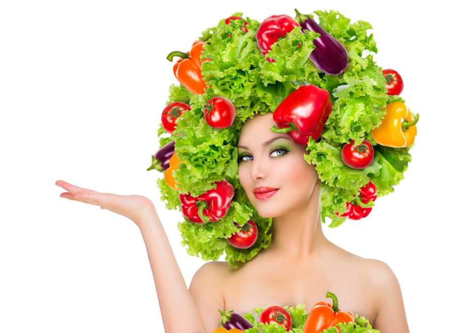
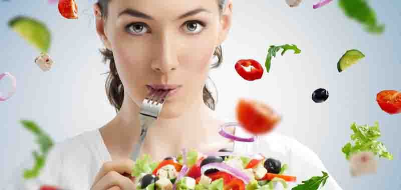

Beneficios de una dieta Vegana
1. Control del peso
Menos consumo de alimentos muy calóricos que se pueden tomar (helados, snacks, dulces, etc…), el eje principal del veganismo son las frutas y verduras ricas en proteínas, bajas en carbohidratos y con un reducido nivel calórico.
2. Reducción de riesgos cardiovasculares
Se previenen enfermedades cardiovasculares como la diabetes, la obesidad, la hipertensión, problemas cardiácos, o incluso ciertos tipos de cáncer como el de colon o de estómago.
3. Desintoxicación
El alto nivel de fibra de los alimentos de la dieta vegana la convierten en un desintoxicante natural.
4. Control de las alergias
Lacteos, crustáceos, pescados y huevos son algunos de los alérgenos más importantes por lo que al eliminarlos de la dieta alivian muchas alergias alimentarias.
6. Menor riesgo de padecer ciertas enfermedades
Los veganos reducen de manera importante la ingesta de grasas saturadas y trans tan dañinas para el organismo, mientras que se alimentan principalmente de las grasas saludables que contienen los vegetales por lo que, además de las enfermedades cardiovasculares, disminuyen el riesgo de padecer cáncer, estreñimiento, hemorroides, enfermedades degenerativas así como afecciones transmitidas por la comida como la bacteria E. Coli, la salmonela y la listeria.
6. Beneficios para el medio ambiente
La ganadería requiere el uso de grandes extensiones de tierras para las que se destruyen bosques, etc…, requiere un consumo de agua 22 veces mayor que la producción vegetal, el excesivo uso de fertilizantes de la industria ganadera contamina 130 veces más el agua y es responsable del 18% de las emisiones de gases de efecto invernadero.
Colocar aquí el contenido de la nueva etiqueta Div
|  |  | ||||||
Para asegurarse de seguir una dieta "bien planificada", los veganos deben encontrar fuentes alternativas de vitamina B12, calcio, vitamina D, proteínas, hierro, zinc y, en algunas ocasiones, de riboflavina.
| Tabla de nutrientes necesarios como aportarlos | |||||||||
| Vitamina B12. |
Los veganos pueden obtener vitamina B12, necesaria para producir glóbulos rojos y para el funcionamiento normal del sistema nervioso, ingiriendo cereales para el desayuno enriquecidos con esta vitamina, productos de soja enriquecidos, levadura nutricional o suplementos de vitamina B12. |
||||||||
| Calcio. |
Todos necesitamos calcio para tener huesos y dientes fuertes. Puedes obtener calcio ingiriendo verdura de hoja verde oscura (como las espinacas, la col china, el brócoli, la berza, la col rizada y los grelos), semillas de sésamo, almendras, alubias rojas y blancas, derivados de la soja, higos secos, melaza residual y alimentos enriquecidos con calcio, como la soja, el arroz y la leche de almendra, los zumos de frutas y los cereales para el desayuno. |
||||||||
| Vitamina D. |
La vitamina D ayuda a nuestro organismo a absorber el calcio y la sintetizamos cuando nos exponemos a la luz solar. Pero puede haber deficiencias de Vitamina D, sobre todo cuando apenas nos exponemos al sol. La vitamina D no se encuentra en los alimentos de origen vegetal que solemos comer, ya que las mejores fuentes dietéticas de esta vitamina son los productos lácteos enriquecidos con vitamina D. Pero los veganos también pueden obtener vitamina D ingiriendo alimentos enriquecidos con esta vitamina, como la leche de soja, la leche de arroz, la leche de almendra, el zumo de naranja y algunos cereales. Los suplementos de vitamina D2 son de origen vegetal, mientras que los suplementos de vitamina D3 son de origen animal. |
||||||||
| Proteínas. | La posibilidad de no ingerir una cantidad suficiente de proteínas es algo que preocupa a la mayoría de la gente cuando empieza a hacer una dieta vegetariana. Los requerimientos proteicos se pueden satisfacer siempre y cuando se siga una dieta vegana en la que se consuma una cantidad adecuada de calorías y una amplia variedad de alimentos de origen vegetal, que incluya buenas fuentes de proteínas, como la soja y otras legumbres, frutos secos y semillas. |
||||||||
| Hierro. | El hierro de origen vegetal es más difícil de absorber que el hierro que contiene la carne. Esta menor biodisponibilidad implica que la ingesta de hierro para un vegetariano debe ser mayor que la indicada en las CDR (cantidades diarias recomendadas) para los no vegetarianos. Los alimentos vegetarianos ricos en hierro son la soja, el tempeh y el tofu; legumbres, como las lentejas y los garbanzos; y los cereales enriquecidos con este mineral. La absorción del hierro se ve favorecida por la ingesta de alimentos ricos en vitamina C. |
||||||||
| Zinc. |
El zinc desempeña un papel fundamental en muchas funciones del organismo, como la respuesta del sistema inmunitario. Por lo tanto, es importante consumir una cantidad suficiente de este mineral y los veganos lo pueden conseguir ingiriendo frutos secos, legumbres, miso y productos derivados de la soja, pipas de girasol y de calabaza, tahini, germen de trigo, cereales integrales y pan integral. |
||||||||
| Ácidos grasos Omega-3. |
Los ácidos grasos Omega-3 (DHA, EPA y ALA) son importantes para la salud cardiovascular y la función cerebral. Los ácidos DHA y EPA se encuentran en el pescado, los huevos y las algas. Los veganos pueden obtener estos ácidos grasos esenciales siguiendo una dieta rica en ácido alfa linolénico (ALA), un ácido graso Omega-3 de origen vegetal. El ALA se encuentra en las semillas de lino, las semillas de chía, las nueces, el aceite de canola y la soja. El DHA, procedente de algas microscópicas, se encuentra en algunos suplementos y en algunos alimentos enriquecidos con Omega-3. |
||||||||
Seguir una dieta vegana
Cualquier persona que siga una dieta vegana debe leer meticulosamente todas la etiquetas alimentarias. No existen leyes ni normativas que regulen que un alimento sea "vegetariano" o "vegano. Por lo tanto, para estar seguro de que un alimento es aceptable para un vegano, se debe leer atentamente su etiqueta: lo vegetariano no tiene que ser necesariamente vegano.
Los veganos no están en absoluto condenados a comer alimentos aburridos y poco variados. Pero, si te estás planteando la posibilidad de hacerte vegano o si te preguntas si es realista eliminar todos los alimentos de origen animal de tu dieta, lo mejor que puedes hacer es empezar despacio..
Si necesitas ayuda, habla con un dietista titulado familiarizado con la dieta vegana y consulta libros de cocina vegetariana que te ayudarán a preparar comidas saludables que no contengan carne.
Fuentes originales:
https://www.saludenvidiable.com/nutricion/dieta-vegana-beneficios-no-conocias/
https://kidshealth.org/es/teens/vegan-esp.html
https://www.saludenvidiable.com/nutricion/dieta-vegana-beneficios-no-conocias/